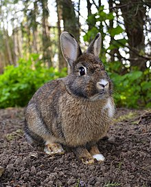

Rabbits are small mammals in the family Leporidae (which also includes the hares), which is in the order Lagomorpha (which also includes pikas). They are familiar throughout the world as a wild prey animal, a domesticated form of livestock, and a pet, having a widespread effect on ecologies and cultures. The most widespread rabbit genera are Oryctolagus and Sylvilagus. The former, Oryctolagus, includes the European rabbit, Oryctolagus cuniculus, which is the ancestor of the hundreds of breeds of domestic rabbit and has been introduced on every continent except Antarctica. The latter, Sylvilagus, includes over 13 wild rabbit species, among them the cottontails and tapetis. Wild rabbits not included in Oryctolagus and Sylvilagus include several species of limited distribution, including the pygmy rabbit, volcano rabbit, and Sumatran striped rabbit.
ზღვის გოჭი (ლათ. Cavia porcellus), გვინეური ზღვის გოჭი, ძუძუმწოვარი ცხოველი მღრღნელების რიგისა. მისი უკუდო სხეული 35 სმ აღწევს. უკანა თათზე 3 თითი აქვს, წინაზე - 4, ზურგი - მოყავისფრო-რუხია. ცხოვრობს პერუს მთისწინების ღია ადგილებში. ბინადრობს სოროებში პატარ-პატარა ჯგუფებად. წელიწადში 2-ჯერ შობს 1-4 ნაშიერს. ზღვის გოჭი (ან მისი ახლობელი სახეობა) სახორცედ მოაშინაურეს ინკებმა. ევროპაში შემოყვანილია XVI საუკუნეში. ზღვის გოჭს იყენებენ ბიოლოგიასა და მედიცინაში ფიზიოლოგიური, იმუნოლოგიური და სხვა ცდებისათვის. ტყვეობაში მრავლდება მთელი წლის განმავლობაში და შობს 6 ნაშიერს. ცუდად იტანს ტემპერატურის მკვეთრ ცვლილებას.

თეთრი დათვი თეთრი დათვი (ლათ. Ursus maritimus — „ზღვის დათვი“) — მტაცებელი ძუძუმწოვარი ცხოველი დათვისებრთა ოჯახისა. იგი არის არქტიკული ფაუნის ტიპობრივი წარმომადგენელი... 9 კბ (436 სიტყვა) - 10:00, 6 დეკემბერი 2023